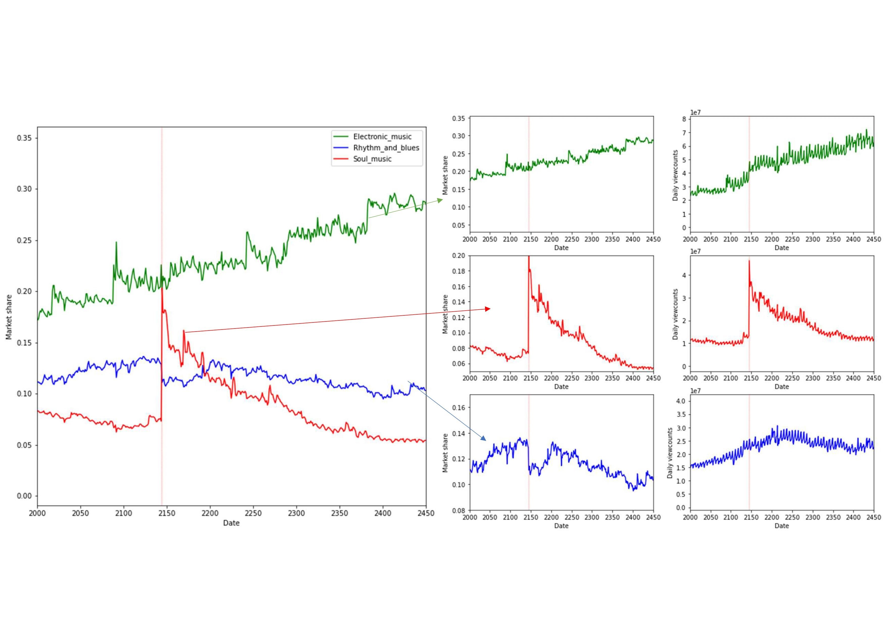

|
Personal Profile I am a fourth-year final-semester student studying Bachelor of Philosophy (Honours) - Science (Honours) in Australian National University. I am majoring in Mathematics and Computer Science. My Honours degree Research project (supervised by Prof. Lexing Xie) is in the area of theoretical computer science and specifically Economic computing . Academic Passion My academic passion now resides at the intersection of computer science and applied mathematics, with a particular focus on theoretical aspects of computer science. This multidisciplinary approach allows me to explore the intellectual challenges and synergies between these fields, pushing me to think critically and creatively. In particular, I am interested optimization techniques and numerical methods for PDEs which unravel hidden patterns and provide valuable insights into real-world problems. On the other hand, compuational algorithms and machine learning expand the boundaries of our computational capabilities. The continuous pursuit of understanding the intricate structures that underpin our world, and how they intertwine with computer science, is what drives me to delve deeper into this fascinating domain. Personal Interests Outside of my academic life, I find solace and excitement in two activities that provide a perfect balance to my mathematical pursuits: video gaming and traveling. Video games have always been an outlet for me to explore virtual worlds and engage with diverse narratives, effectively honing my problem-solving skills and strategic thinking. The immersive nature of gaming allows me to break away from the everyday routine and experience different perspectives. Travel, on the other hand, has given me the opportunity to connect with new cultures and marvel at the beauty of our planet. So far, I have been fortunate enough to visit Italy, Thailand, Vietnam, New Zealand, China, and (of course) Australia. Each journey has been an enriching experience, broadening my understanding of the world and inspiring me to seek out further adventures. I am eager to continue exploring the globe, making new memories, and gaining invaluable insights that will undoubtedly shape my personal and professional growth. |
|---|
|
Stability and Efficiency of Online Cultural Market Honours Project, One paper accepted by WWW'23 Supervisors/Collaborators: Prof. Lexing Xie Dr. Yun Kuen Chueng Abstract: This work is concerned with the dynamics of online cultural markets, namely, attention allocation of many users on a set of digital goods with infinite supply. Such dynamics are important in shaping processes and outcomes in society, from trending items in entertainment, collective knowledge creation, to election outcomes. The outcomes of online cultural markets are susceptible to intricate social influence dynamics, particularly so when the community comprises consumers with heterogeneous interests. This has made formal analysis of these markets improbable. In this paper, we remedy this by establishing robust connections between influence dynamics and optimization processes, in trial-offer markets where the consumer preferences are modelled by multinomial logit. Among other results, we show that the proportional-response-esque influence dynamic is equivalent to stochastic mirror descent on a convex objective function, thus leading to a stable and predictable outcome. When all consumers are homogeneous, the objective function has a natural interpretation as a weighted sum of efficiency and diversity of the culture market. In simulations driven by real-world preferences collected from a large-scale recommender system, we observe that ranking strategies aligned with the underlying heterogeneous preferences are more stable, and achieves higher efficiency and diversity. More broadly, we see this work as the first step in connecting computational methods for classical markets to the problem area of online attention and recommender systems. We hope this result paves the way to posing and answering a diverse set of research questions in this area. |
|
|---|---|
|  |
Making Choices in Online Attention Market Semester Project ( SCNC3101 ) Supervisors/Collaborators: Prof. Lexing Xie Dr. Alvaro Flores Abstract: This project aims to investigate the competition of online items and its impacts on consumers' choices. Especially, we will focus on the cases where existences of recommender systems are considered. We will first review and link the existing results in the asymptotic behaviour of discrete choice models (DCM) and online attention markets. Then, we will investigate the multivariate Hawkes process (MHP) model and relate it to choice models. Finally, we will study the multi-type Galton–Watson branching process (MTBP), which could be regarded as a theoretically well-studied simplification of the MHP. We derived several relationships among DCM’s, MBP’s and MTBP’s. By linking MTBPs’, MHP’s and the concept of market share, we also proposed a conjecture on the asymptotic type distribution of MHP’s and verified it by simulation studies. Our work presents a wide range of literature reviews and their relations to customers’ choices in the online attention market, which provides solid foundations for proceeding works. |
|
Nonconvex Optimisation for Low-Rank Matrix Factorisation Problems Semester Project ( SCNC3101 ) Supervisors/Collaborators: Dr. Lindon Roberts Abstract: In this report, we investigate the global landscape of matrix factorization, a challenging non-convex optimization problem with applications in numerous domains. We focus on analyzing existing research to gain a comprehensive understanding of the global landscape, revealing intricate properties and unique characteristics that can be harnessed to improve optimization performance. Building upon the insights from the literature, we study a family of optimization methods specifically designed to exploit the global landscape for efficient problem-solving. We examine the implementation of these algorithms and evaluate their performance on various real-world and synthetic datasets, highlighting significant improvements in terms of convergence speed, solution quality, and robustness compared to existing state-of-the-art techniques. Our findings hold substantial potential for advancing matrix factorization and its applications, offering a comprehensive exploration of the problem's global landscape and emphasizing the importance of novel optimization methods that capitalize on its unique characteristics. |
|
Terrell International Undergraduate Scholarship |
2020, Australian National University |
|---|---|
|
Awarded to Rank 1st student among all first-year international students involving 50% Deduction of tuition fees and 100% oversea student’s insurance (About 60000 AUD) |
|
|
Chancellor’s Letter of Commendation |
2020 and 2021, Australian National University |
|
Awarded to students with high academic achievements (full GPA) in the year |
|
|
Dean’s Science Education Commendation |
2021 and 2022, Australian National University |
|
Awarded to students with high academic achievements (WAM ≥ 90) in one semester. |
|
|
Summer Research Internship with Extension Scholarship |
2022, Australian National University |
|
Conducting the project “Making Choices in Online Attention Market” with extension scholarship of 5000AUD. |
| Math | Computer Science | |
|---|---|---|
| 1000-level |
Mathematics and Applications 1 Mathematics and Applications 2 |
Programming as Problem Solving Structured Programming Web Development and Design |
| 2000-level |
Applied Mathematics I Adv Analysis 1: Metrics Spaces Adv Algebra 1: Groups, Rings and Linear Algebra |
|
| 3000-level |
Numerical Optimisation Stochastic Analysis with Financial Applications Adv Analysis 2: Lebesgue Integration and Hilbert Spaces Differential Geometry Probability Theory with Applications Randomised Numerical Algorithms and Applications to Data Science Non-smooth Optimisation |
Introdution to Machine Learning Algorithms |
| 4000-level |
Topics In Compuational Maths (H) |
Advanced Computing Research Methods Advanced Algorithms Computer Vision Statistical Machine Learning |
|
Structured Programming |
2022 Semester 2 |
|---|---|
|
First-year programming course introducing Java. |
|
|
Introdution to Machine Learning |
2022 Semester 2 |
|
Third-year course introducing basic machine learning algorithms and their mathematical foundations. |
|
|
Algorithms |
2022 Semester 2 |
|
Third-year course introducing foundations of algorithms and data structures. |
|
|
Statistical Machine Learning |
2022 Semester 1, 2023 Semester 1 |
|
Fourth-year course giving comprehensive overview of machine learning algorithms from statistical point of view. |
|
|
Computer Vision |
2023 Semester 1 |
|
Fourth-year course giving an introdution to computer vision in all levels. |